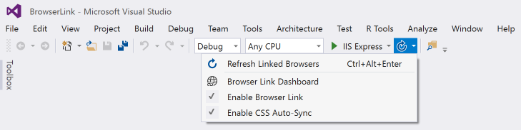
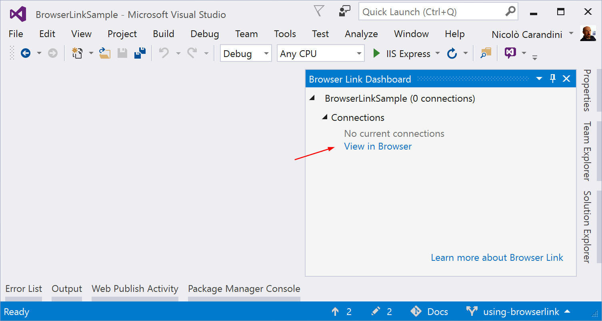

Browser Link in ASP.NET Core
By Nicolò Carandini, Mike Wasson, and Tom Dykstra
Browser Link is a feature in Visual Studio that creates a communication channel between the development environment and one or more web browsers. You can use Browser Link to refresh your web application in several browsers at once, which is useful for cross-browser testing.
Browser Link setup
The ASP.NET Core 2.x Web Application, Empty, and Web API template projects use the Microsoft.AspNetCore.All meta-package, which contains a package reference for Microsoft.VisualStudio.Web.BrowserLink. Therefore, using the Microsoft.AspNetCore.All meta-package requires no further action to make Brower Link available for use.

Configuration
In the Configure method of the Startup.cs file:
app.UseBrowserLink();
Usually the code is inside an if block that only enables Browser Link in the Development environment, as shown here:
if (env.IsDevelopment())
{
app.UseDeveloperExceptionPage();
app.UseBrowserLink();
}
For more information, see Working with Multiple Environments.
How to use Browser Link
When you have an ASP.NET Core project open, Visual Studio shows the Browser Link toolbar control next to the Debug Target toolbar control:

From the Browser Link toolbar control, you can:
- Refresh the web application in several browsers at once.
- Open the Browser Link Dashboard.
- Enable or disable Browser Link. Note: Browser Link is disabled by default in Visual Studio 2017 (15.3).
- Enable or disable CSS Auto-Sync.
Note
Some Visual Studio plug-ins, most notably Web Extension Pack 2015 and Web Extension Pack 2017, offer extended functionality for Browser Link, but some of the additional features don't work with ASP.NET Core projects.
Refresh the web application in several browsers at once
To choose a single web browser to launch when starting the project, use the drop-down menu in the Debug Target toolbar control:

To open multiple browsers at once, choose Browse with... from the same drop-down. Hold down the CTRL key to select the browsers you want, and then click Browse:

Here's a screenshot showing Visual Studio with the Index view open and two open browsers:

Hover over the Browser Link toolbar control to see the browsers that are connected to the project:

Change the Index view, and all connected browsers are updated when you click the Browser Link refresh button:

Browser Link also works with browsers that you launch from outside Visual Studio and navigate to the application URL.
The Browser Link Dashboard
Open the Browser Link Dashboard from the Browser Link drop down menu to manage the connection with open browsers:

If no browser is connected, you can start a non-debugging session by selecting the View in Browser link:

Otherwise, the connected browsers are shown with the path to the page that each browser is showing:

If you like, you can click on a listed browser name to refresh that single browser.
Enable or disable Browser Link
When you re-enable Browser Link after disabling it, you must refresh the browsers to reconnect them.
Enable or disable CSS Auto-Sync
When CSS Auto-Sync is enabled, connected browsers are automatically refreshed when you make any change to CSS files.
How does it work?
Browser Link uses SignalR to create a communication channel between Visual Studio and the browser. When Browser Link is enabled, Visual Studio acts as a SignalR server that multiple clients (browsers) can connect to. Browser Link also registers a middleware component in the ASP.NET request pipeline. This component injects special <script> references into every page request from the server. You can see the script references by selecting View source in the browser and scrolling to the end of the <body> tag content:
<!-- Visual Studio Browser Link -->
<script type="application/json" id="__browserLink_initializationData">
{"requestId":"a717d5a07c1741949a7cefd6fa2bad08","requestMappingFromServer":false}
</script>
<script type="text/javascript" src="http://localhost:54139/b6e36e429d034f578ebccd6a79bf19bf/browserLink" async="async"></script>
<!-- End Browser Link -->
</body>
Your source files aren't modified. The middleware component injects the script references dynamically.
Because the browser-side code is all JavaScript, it works on all browsers that SignalR supports without requiring a browser plug-in.